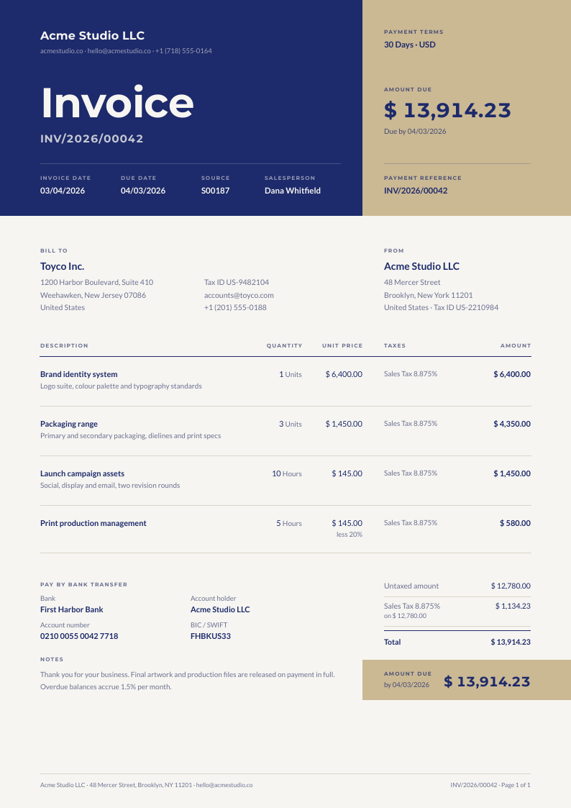
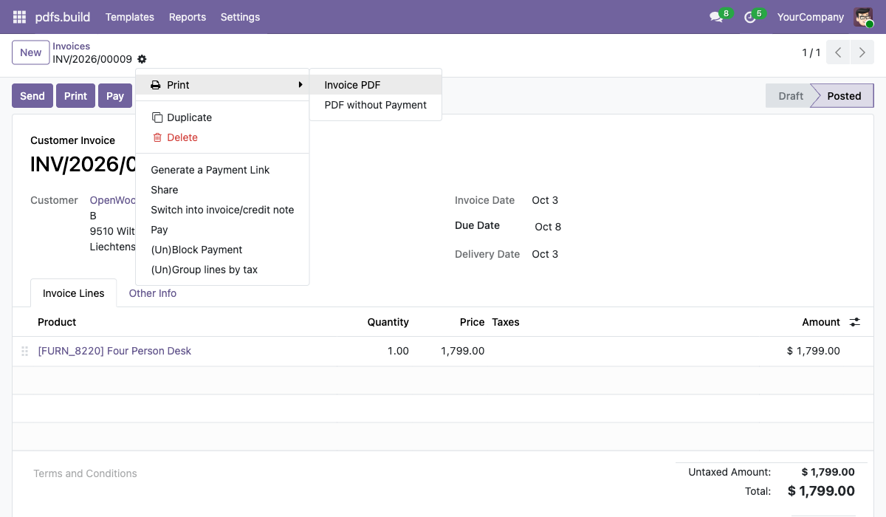
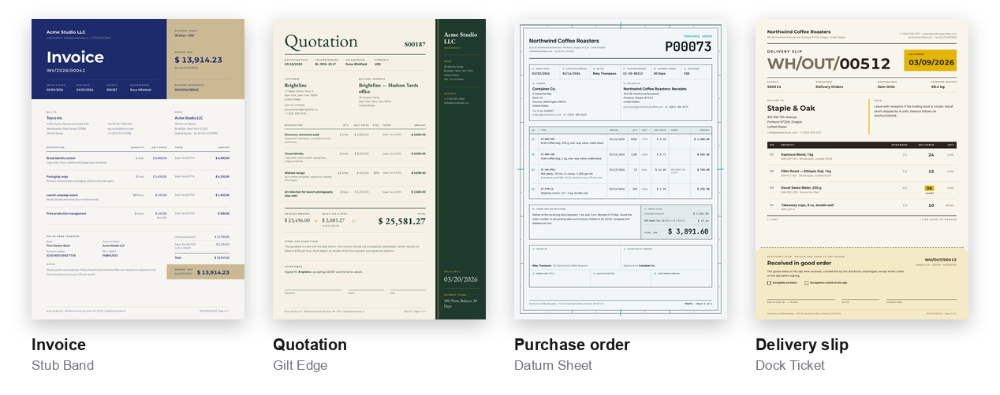
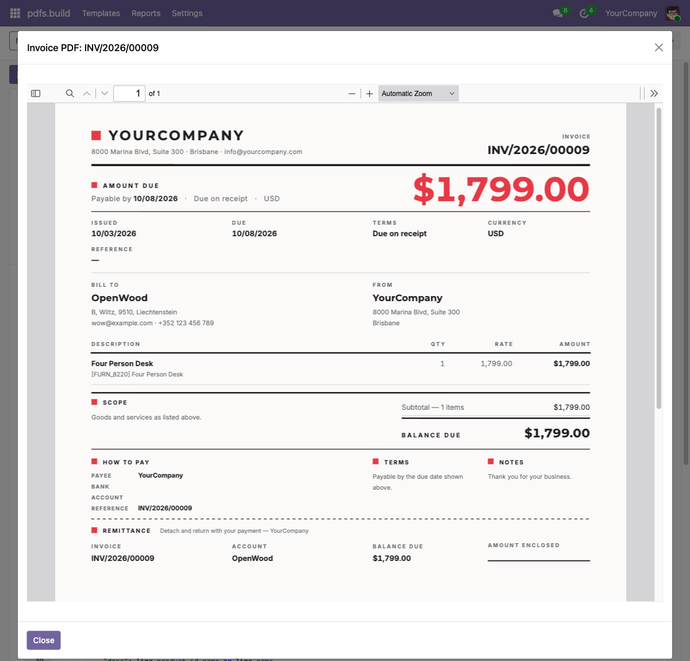
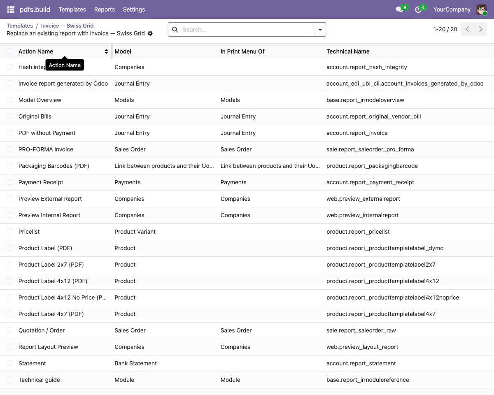
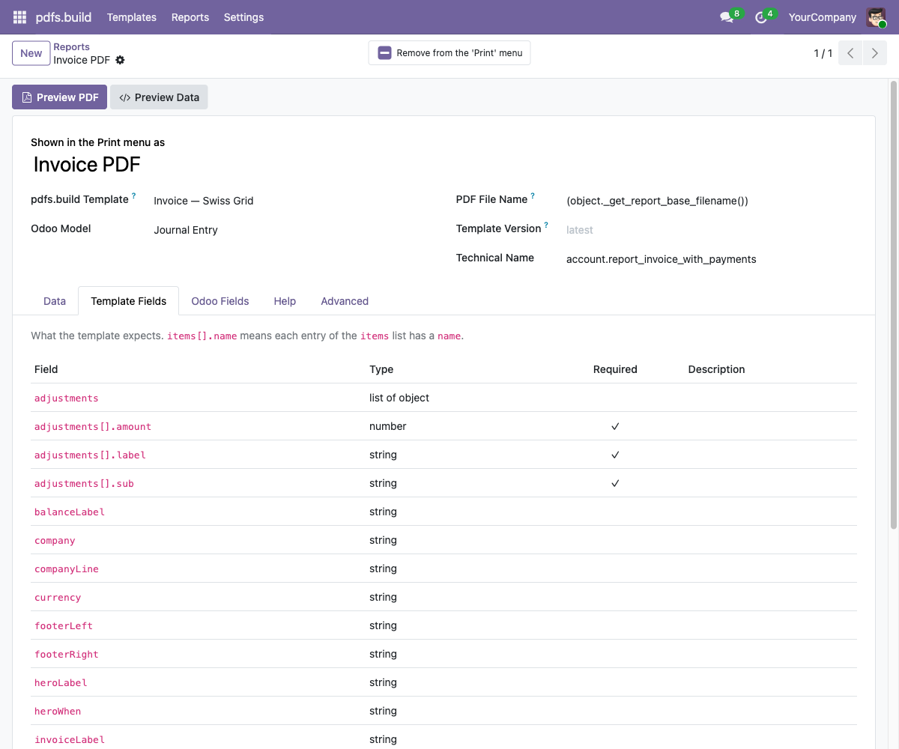
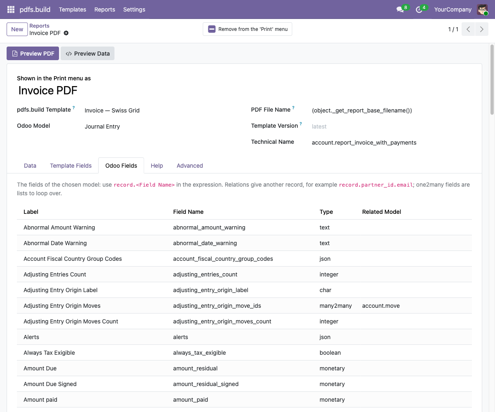

API included in the trial. Plans from $19 a month after it.


Your design replaces Odoo's own Invoice PDF: the Print button, Send by email, the customer portal and the PDF stored on the invoice all use it. Odoo's e-invoice XML (Factur-X, UBL) is still embedded.

Designs for Odoo lists invoice, quotation, purchase order and delivery slip designs with previews. Click one: it is copied into your pdfs.build organization and its report is created, already reading the right Odoo fields. It takes your company logo and document-layout colors from Odoo's settings.
Two designs for each document type, from bold to conservative, and more on pdfs.build/templates. Want something else? Describe the document to the pdfs.build AI designer, or edit any design visually with live preview, then print it from Odoo.
Start the free trial, create an API key, and paste it with your organization ID in pdfs.build > Settings.
Add one from Designs for Odoo, or sync your own templates. Preview the PDF on a real record before going live.
Use it for Odoo's Invoices or Quotation / Order report, or add it as a new entry in the Print menu.

Preview PDF renders the record you pick and shows it in Odoo's PDF viewer.

Use for Existing Report hands Invoices, Quotation / Order or any other Odoo PDF report to a design. Clear it to go back.
For a template of your own, the report's data is written for you from the template's fields: everything that matches an Odoo field, lines and nested records included, is filled in. The rest is a short Python expression, with both sides listed next to it.

What the template expects: every field with its type and description.

The Odoo model's fields with their labels, so nobody guesses a technical name.
This module uses the external service pdfs.build. You need a pdfs.build account with API access and at least one published template, or a design added from Designs for Odoo. New accounts start with a 7-day free trial that includes the API; plans start at $19 a month after it.
Every print sends the data produced by the report, together with your API key, to api.pdfs.build. Nothing else leaves your Odoo. Render logs on pdfs.build keep the data payload for your audit trail.
Questions: hello@pdfs.build